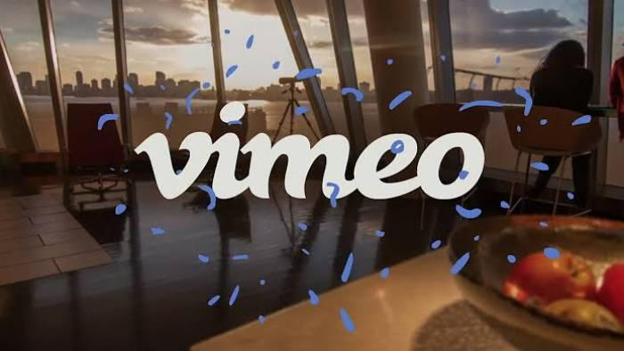

Vídeo Design é um metodo de criação de videos, na qual predomina o uso de motion graphics, e é como o nome diz, gráfico em movimento no espaço da tela e no tempo.
Estas são algumas das plataformas onde podes divulgar os teus videos, e torna-los publicos para que outros possam ver.

Trabalho realizado por Gonçalo Brás nas aulas de Video Design.
| Vídeo | ||
|---|---|---|
| Curtas Metragens | Longas Metragens | Autores |
| Os inocentes | Tudo o que não é real, e intemporal | Rui Carvalho |
| Antonio Cerveira | ||
| João Nunes e Carlos Boto | ||
| Atira-te para o Chão | Ricardo Antunes |